Los Angeles has so many great food options spanning diverse cuisines, you’re sure to find something that suits your palate! Here are some of my favorite places, organized by location. I also include a few coffee shops at the bottom if you’re also looking to get some work done while you’re here.
L.A. Area:
- Republique: Brunch and pastries – everything I’ve had on their menu has exceeded my expectations, from their savory kimchi brioche to the brioche french toast (so eggy and buttery and good) to the croque madame (bread, butter, cheese, ham, egg – what more can you ask for?!).
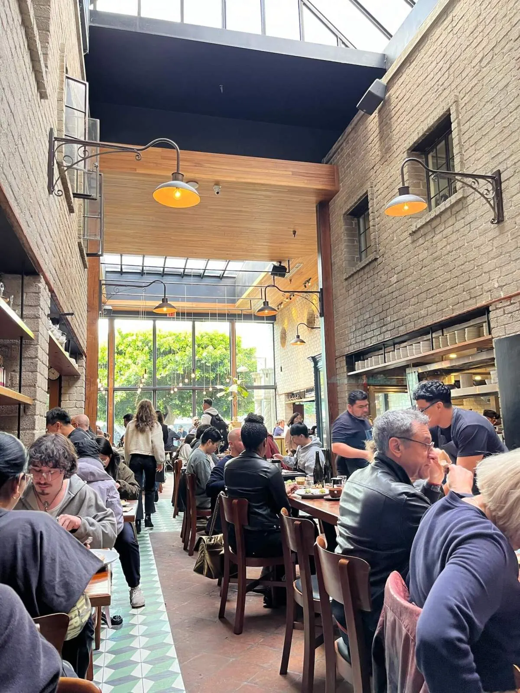
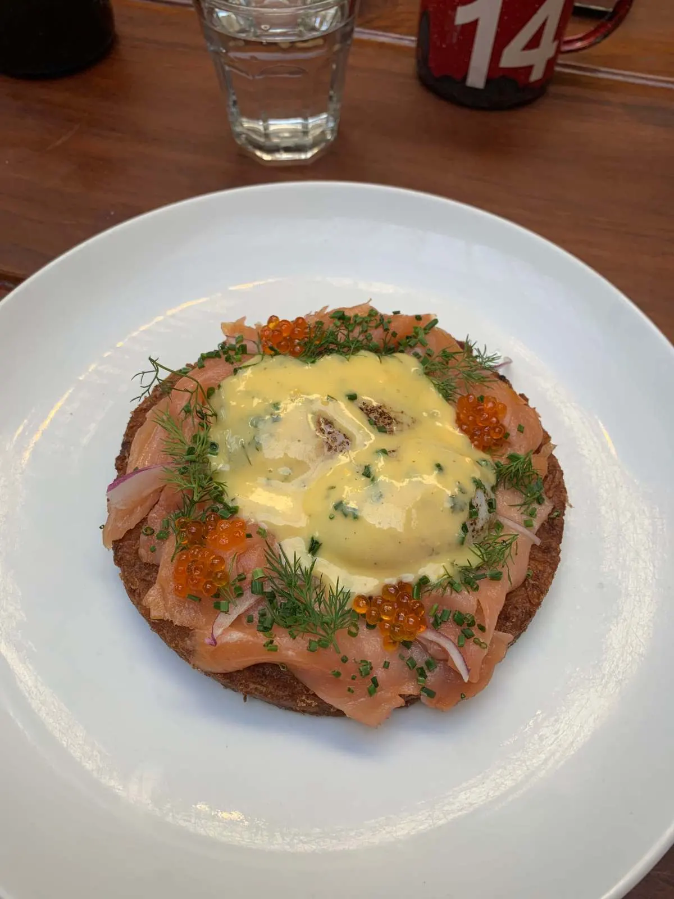
- Olvera Street: Street near Chinatown with stalls selling Mexican food and items (try the taquitos at Cielito Lindo!) as well as sit-down restaurants like Las Anitas (they may play a song for you).
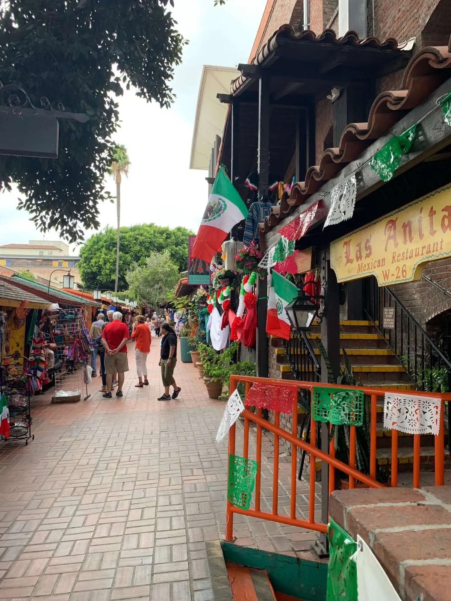
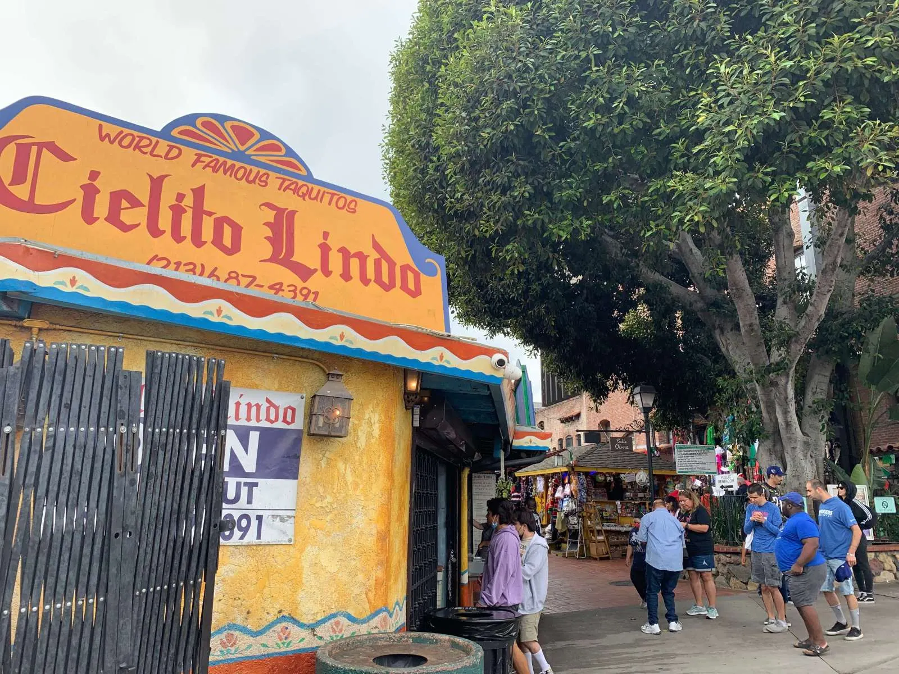
- Sugarfish: Sushi – multiple locations throughout L.A.
- Grand Central Market – indoor market in downtown with a variety of food offerings (and cheap parking, which is super important!)
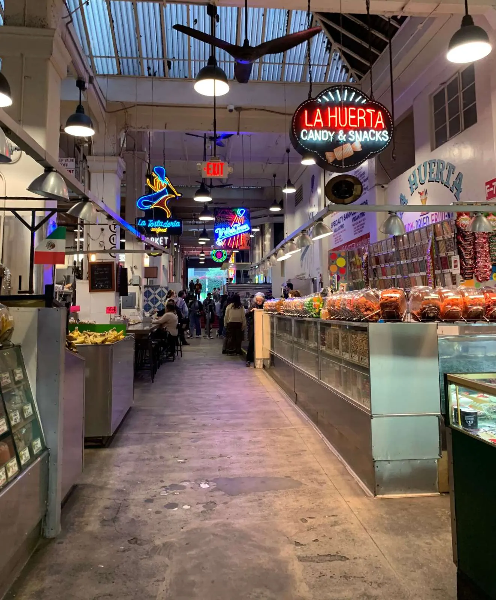
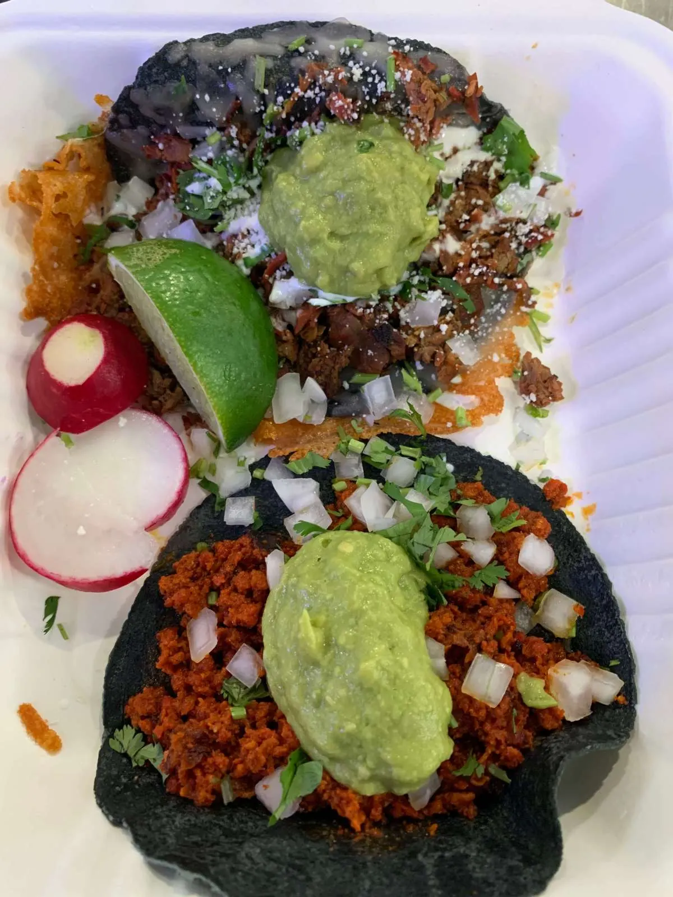
- Ruen Pair (Hollywood): Good Thai food
- Guisados Tacos: in multiple locations
- Tacos Tu Madre (near Griffith Park)
- Maccheroni Republic (pasta)
- Great White (New American – try their salmon curry, pizza, and breakfast burrito)
- Dialog Cafe (N Hollywood)
- Pine & Crane (Silver Lake): Recommend for Taiwanese food! They have hot dishes like noodle soup along with appetizer dishes served cold
- Bacari: delicious small plates, tapa style – highly recommend as a nice place to celebrate an occasion with friends and family!
- Northern Café: authentic Chinese food near USC (and a go-to for international students)
- Thai by Trio: Thai place also by USC
San Gabriel Valley
Rather than Chinatown, Monterey Park/San Gabriel are go-to spots for Asian food in L.A.! Try some dim sum at Alice’s Kitchen, NBC Seafood, or Five Star Seafood, or get some dumplings at Mama Lu’s Dumpling House.
Koreatown
Ktown is well-known for its wide array of good food and fun bar options! While it may not be the most walkable town, you can usually find street parking or parking lots wherever you go, which is convenient.
- BCD Tofu House: Their flavorful tofu soup has become my go-to when I’m not feeling well or just craving something warm and soothing. It has rejuvenated me after a rough hike, or been a late night stop after going out (they open late!). They also have a parking lot at both locations in Ktown, which is super convenient.
- Surawon Tofu House: A more local option, this has also become my go-to tofu soup place – they also have black bean tofu as an option!
- Hangari Kalguksu: try their noodles!
- MDK Noodles
- The Bun Shop: yummy buns
- Parks BBQ: fancy Korean BBQ that’s pricey but worth it for the high quality
- Sul & Beans: my favorite shaved ice place – you can get it with fruit and other toppings!
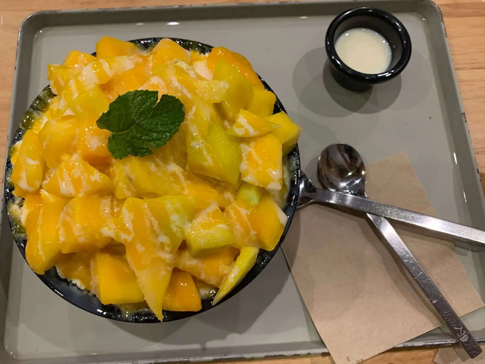
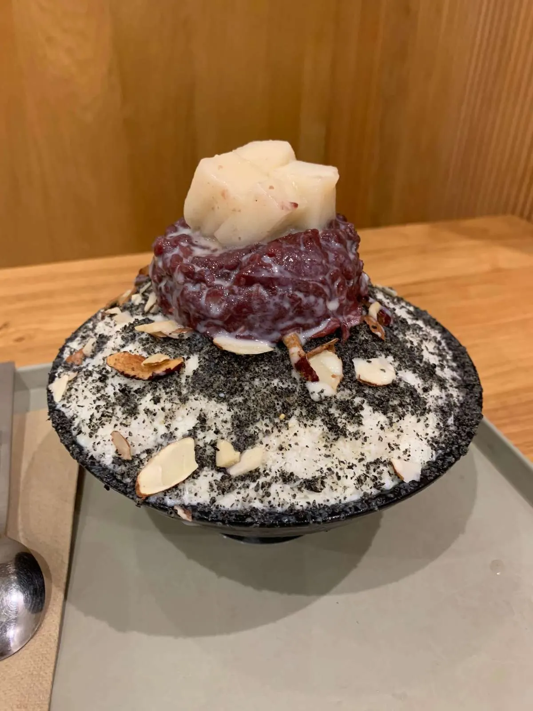
Little Tokyo
Little Tokyo (Village Plaza) is a fun little spot to walk around, especially at night when the red lanterns light up! There are many delicious ramen and sushi places, as well as dessert and bakery options. Here are just a few to check out:
- Hama Sushi: an intimate environment with authentic sushi that they make in front of you
- Zencu Sushi: enjoyed their many sushi roll options
- Maragume Monzo: ramen
- Rice & Nori: rice balls
- Sunright Tea Studio: best boba (especially love their fruit teas)
- Yamazaki Bakery: quick stop for pork buns and desserts
- SomiSomi: fish-shaped waffle cone served with ice cream
Sawtelle
If you’re looking for more delicious Japanese food, Sawtelle is a must – it’s one main street with trendy shops (including a plant store!), cafes, and restaurants. I find there to be more ramen options here.
- En Sushi
- Tsujita LA Artisan Noodles (ramen)
- Daikokuya (ramen)
- Killer Noodle (ramen)
- Hide Sushi
- Chitchat Coffee: try their strawberry macadamia nut matcha latte!
- Hermanito: I haven’t eaten here but they have a really cute indoor/outdoor bar scene
- Tasty Noodle House
- Seoul Tofu
- Saffron & Rose (Persian ice cream near UCLA – try all their rose flavors!)
- Matcha Village (matcha drinks and desserts)
Culver City
- Destroyer (cute cafe and brunch spot)
- Simpang Asia (amazing Indonesian food)
- Fathers Office (American – good burgers)
- Pasta Sisters (I usually avoid spending $$ on pasta since I make it at home all the time, but this pasta is so good and worth it!)
- Mayura (was recommended for Indian food)
- Simonette (delicious French food and fancy vibe)
- Best Bet (pizza)
- Versailles Cuban Food (authentic Cuban cuisine)
- Wanderlust Creamery (try the saffron and matcha ice cream!)
- Salt & Straw (ice cream flavors that rotate every season. Lavender is my all-time favorite)
- Bianca (fancy pastry and coffee spot)
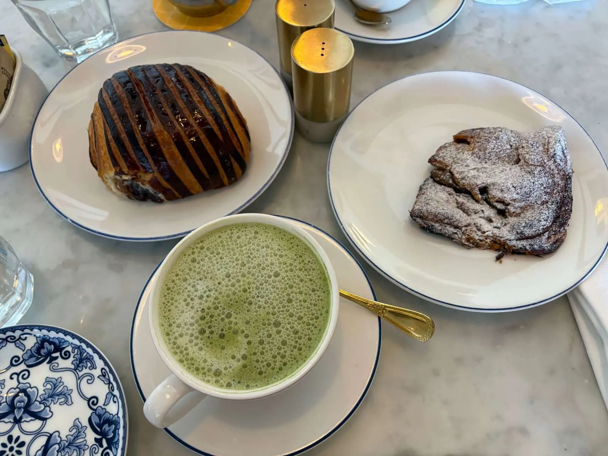
Santa Monica / Malibu
- Elephante: This is my favorite spot to take my friends — think bougie, L.A. vibes with a nice view of palm trees and ocean (and sunset!). Reserve ahead of time and book the Sunset Room, which is closer to the ocean view. If you’re lucky you might get a table on the balcony (though bring a hat if you’re there for brunch as it can get pretty sunny). The whipped eggplant hummus is a must-try (comes with a generous serving of pita bread – see pic below), but pretty much everything on the menu is delicious (including their mocktails – so light and refreshing – and cocktails – I recommend the Elephante cocktail)!
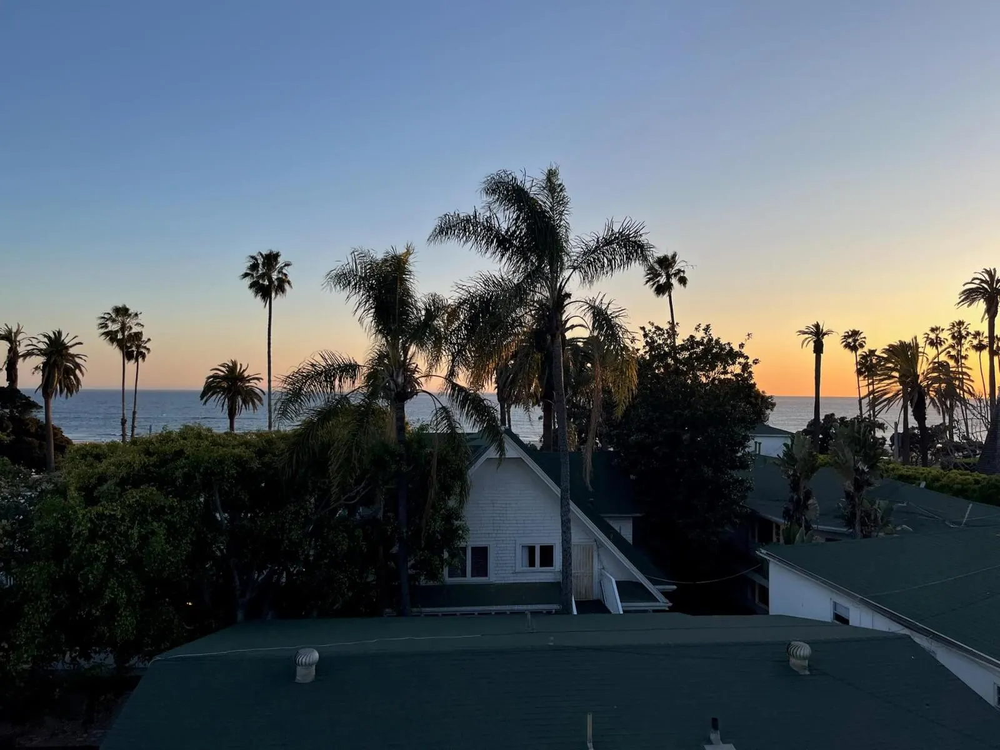
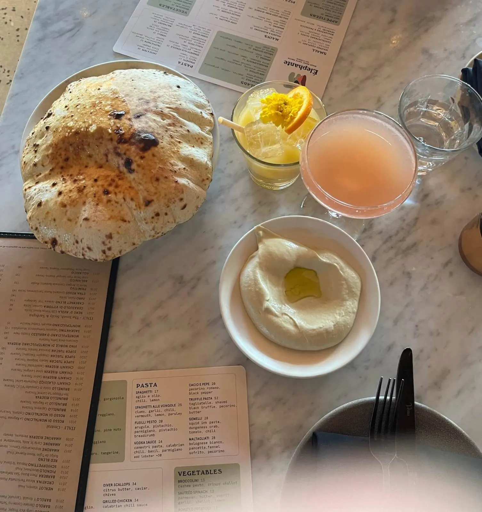
- KazuNori (same owner as Sugarfish): Hand-rolled sushi in a casual bar setting
- Gyukaku: Try the shishito peppers (with sauce) and beef (to grill), and the cheese corn small plate
- Shirube: This place was a little hard to spot – we just happened to walk by it – but it turned out to be a nice and cozy family style Japanese place (they sear the mackerel sashimi in front of you, and their udon is p good)
- Breakfast by Salt’s Cure: Healthy-tasting and yummy oatmeal pancakes (their sides are good too!)
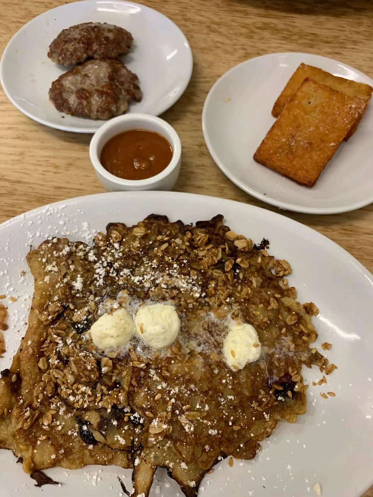
- Brunch: I was recommended Bru’s Wiffle (waffles and french toast), Layla’s bagels (sourdough bagels and bagel sandwiches), Society Kitchen LA, Good People Cafe (experimental), and Bluey’s (Australian restaurant – LA hippie vibe)
- JuneShine: kombucha flights!
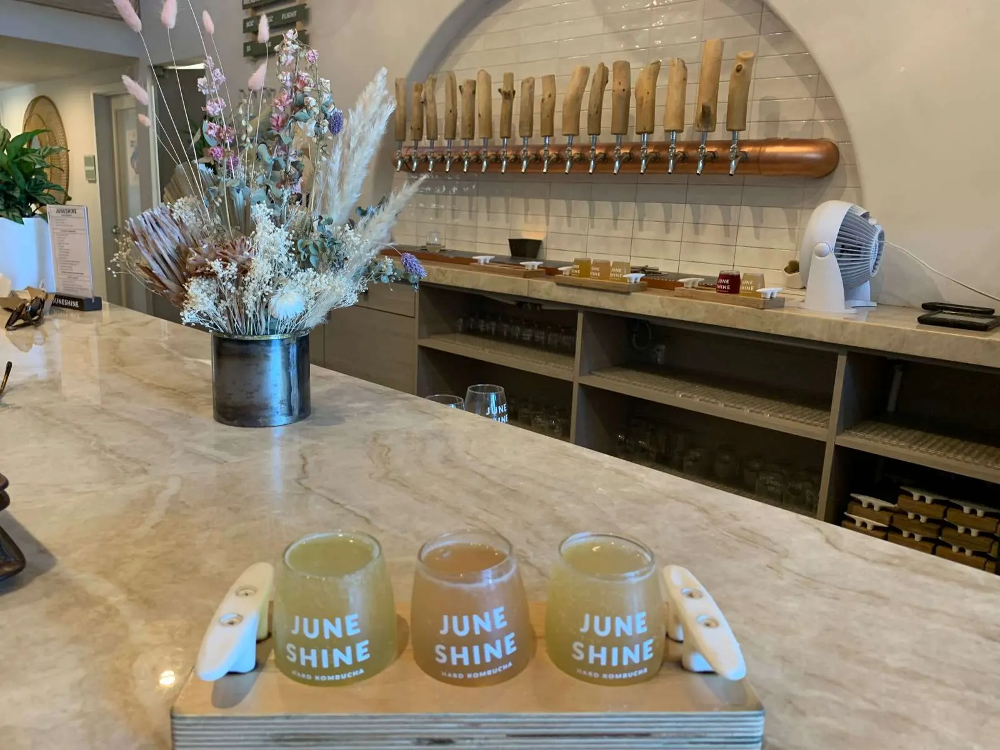
- If you’re craving donuts, you’re in luck! Randy’s Donuts and Sidecar Donuts are a couple that I can personally attest have amazing donuts – but don’t wait until the last minute as they may run out before closing time!
- [Malibu] Malibu Seafood – everything seafood (their scallops are amazing)
- [Malibu] Duke’s – Hawaiian food
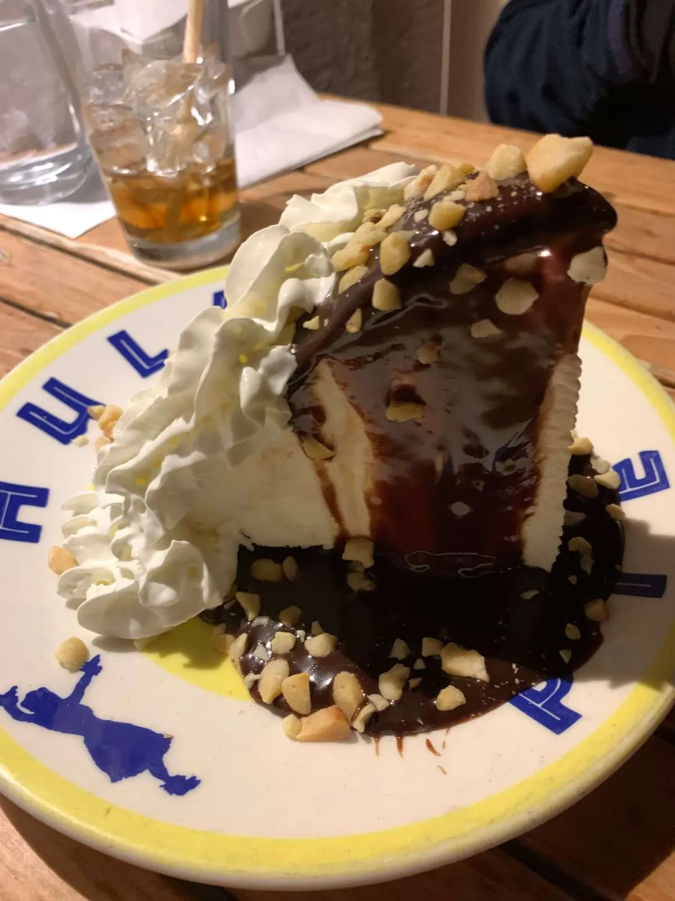
Coffee Shops
If you’re looking for study/work friendly coffee shops, I generally recommend going to Culver City and Koreatown – their coffee shops aren’t primarily catered to tourists so they’re more likely to come with WiFi, outlets, etc. and you can usually find street parking or at least more affordable options.
Culver City:
- Philz Coffee: amazing coffee flavors and good place for studying (if you can find a seat!)
- Village Well Book Store: they have a few tables for studying and a cafe inside
- Other coffee shops I’ve been recommended include Go Get ’em Tiger, Coffee Commissary, Eyes Peeled, and Good Morning Stanley’s
Santa Monica:
Santa Monica probably isn’t the best place to study as it has a more touristy vibe, so my go-to when I’m there is the Capital One Cafe right near the 3rd Street Promenade – they have all the amenities you need (WiFi, water, outlets, etc.) and good coffee (you get half off coffee if you have a Capital One card)!
Koreatown:
- Coffee MCO: I found their coffee to be a bit overpriced, and it can get busy there on weekends, but they had pretty nice study vibes. There’s usually plenty of street parking around too.
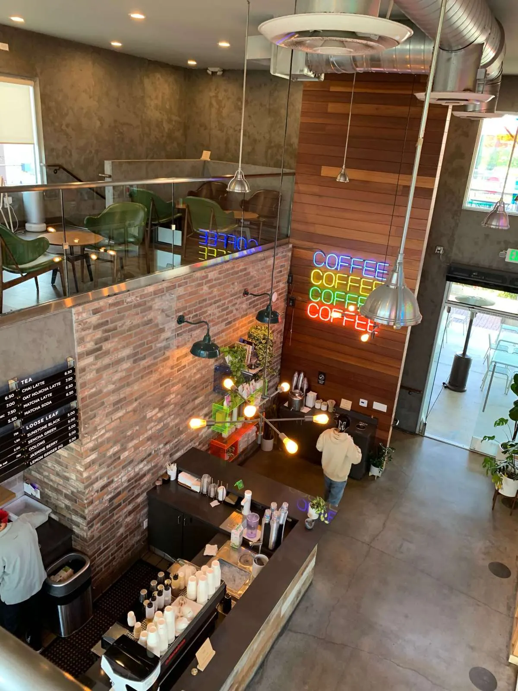
- Cafe Bohnen: Not as much seating here as Coffee MCO, but I was surprised by how authentic their passionfruit green tea tasted – the passionfruit flavoring wasn’t too strong or artificial-tasting. Also plenty of street parking around.
- Alchemist Coffee Project: Enjoyed their matcha tea. Not all of the tables have outlets, but I liked the studying vibe there. There’s a small parking lot in front
- Alibi Coffee looked nice too!
To make the most of your time here, check out my blog on things to do or hikes to try around L.A.!